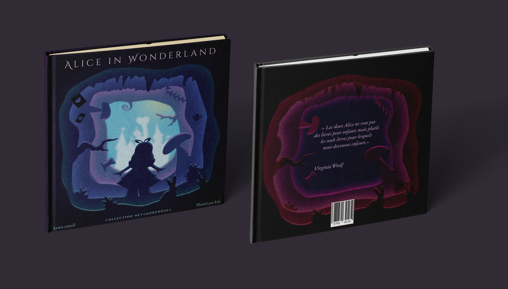

Alice - Couverture
Illustration - Illustrator - Photoshop - Indesign





Projet de cours autour du roman iconique de Lewis Carroll, Alice au pays des merveilles, avec la conception de la 1re et de la 4e de couverture à travers une approche illustrée, enfantine et accessible aux plus jeunes. L'objectif : créer une couverture immersive et poétique qui capte l'imaginaire du récit tout en structurant l'ensemble des éléments éditoriaux, de l'illustration jusqu'à la mise en page finale. Illustration & profondeur : les différents plans ont d'abord été construits sur Illustrator afin d'installer une sensation de profondeur et de découpage autour de la silhouette d'Alice et de l'univers souterrain. Lumières & effets : des jeux de lumière et de distorsion ont ensuite été ajoutés sur Photoshop pour renforcer l'atmosphère féerique, le contraste coloré et l'immersion dans le pays des merveilles. Édition & mise en page : le travail éditorial sur la couverture et la 4e de couverture — incluant titre, mentions de collection, citation de Virginia Woolf et code-barres — a été finalisé avec soin sur InDesign et mis en situation sur un livre.